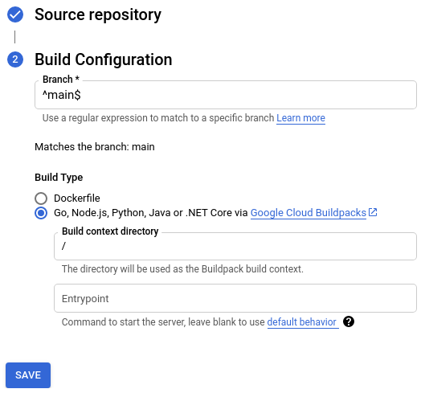

What You'll Learn
Welcome to TBD!
Let's get to know how GCP - Google Cloud Platform help developers to deploy their projects with automatically pipeline.
This event will walk through the following steps.
- Create a new project on GCP
- Deploy the microservice on Cloud Run
- Buildup automatic pipeline on Cloud Run
At the end of the event, you have to submit your microservice to the Leaderboard.
Leader board
The host will send the HTTP POST request. And the microservice should response with the following JSON structure:
{
"username": "Kang", //The registered username
"flag": "jplOsDIaFLhcMRlS" //The 16-word random generated string
}
After the host receive the JSON response. It will update the leaderboard.
To be able to deploy your microservice on Cloud Run you will need to login to Google Cloud. We will apply a credit to your account and you won't need to enter a credit card. It is usually less problematic to use a personal account (e.g. gmail.com) instead of a GSuite account because sometimes GSuite admins prevent their users from using certain Google Cloud features. Also, the web console we will be using should work great with Chrome or Firefox but might have issues in Safari.
This section covers everything you need to do to get started with this event.
Environment setup
Sign in to Cloud Console and create a new project.


Remember the project ID, a unique name across all Google Cloud projects. It will be referred to later in this codelab as PROJECT_ID.
Be sure to follow any instructions in the "Cleaning up" section which advices you how to shut down resources so you don't incur billing beyond this event. New users of Google Cloud are eligible for the $300 USD Free Trial program.
Start Cloud Shell
In this event you're going to work in a Cloud Shell session, which is a command interpreter hosted by a virtual machine in Google's cloud. You could just as easily run this section locally on your own computer, but using Cloud Shell gives everyone access to a reproducible experience in a consistent environment.

Activate Cloud Shell
- From the Cloud Console, click Activate Cloud Shell

If you've never started Cloud Shell before, you're presented with an intermediate screen (below the fold) describing what it is. If that's the case, click Continue (and you won't ever see it again). Here's what that one-time screen looks like:

It should only take a few moments to provision and connect to Cloud Shell.

This virtual machine is loaded with all the development tools you need. It offers a persistent 5GB home directory and runs in Google Cloud, greatly enhancing network performance and authentication. Much, if not all, of your work in this codelab can be done with simply a browser or your Chromebook.
Once connected to Cloud Shell, you should see that you are already authenticated and that the project is already set to your project ID.
- Run the following command in Cloud Shell to confirm that you are authenticated:
gcloud auth list
Command output
Credentialed Accounts
ACTIVE ACCOUNT
* <my_account>@<my_domain.com>
To set the active account, run:
$ gcloud config set account `ACCOUNT`
- Run the following command in Cloud Shell to confirm that the gcloud command knows about your project:
gcloud config list project
Command output
[core] project = <PROJECT_ID>
If it is not, you can set it with this command:
gcloud config set project <PROJECT_ID>
Command output
Updated property [core/project].
OK, now you are ready to deploy the microservice!
You can build your microservice with any technology and deploy it anywhere as long as it is reachable publicly and conforms to the API. But to make things easy we will help you start from a sample service and deploy it on Cloud Run.
Pick Your Sample to Start with
There are numerous sample microservices you can start from:
Sample | Description | Deploy |
Python + Flask | ||
Go Lang | ||
Node.js | ||
Java + Spring Boot |
After you decide which sample to start with, click the "Deploy on Cloud Run" button above. This will launch Cloud Shell (a web-based console to a virtual machine in the cloud) where the source will be cloned, then built into a deployable package (a docker container image), which is then uploaded to the Google Container Registry, and then deployed on Cloud Run.
When asked, specify the us-central1 region.
The screenshot below shows Cloud Shell output for microservice build and deployment

Verify the microservice works
In Cloud Shell you can make a request to your newly deployed microservice, replacing YOUR_SERVICE_URL with the URL for your service (which is in Cloud Shell after the "Your application is now live here" line).
Before you can make changes you need to setup some information in Cloud Shell about the GCP project and the sample you used. First list your GCP projects:
gcloud projects list
Copy the newly created PROJECT_ID from the first column and paste it into the following command (replacing YOUR_PROJECT_ID with your actual Project ID), in order to set an environment variable that we will use in later commands:
export PROJECT_ID=YOUR_PROJECT_ID
Now set another environment variable for the sample you used so in later commands we can specify the correct directory and service name:
# Copy and paste ONLY ONE of these export SAMPLE=java-springboot export SAMPLE=go export SAMPLE=nodejs export SAMPLE=python
Now, you can edit the source for your microservice from within Cloud Shell. To open the Cloud Shell web-based editor, run this command:
cloudshell edit cloudbowl-microservice-game/samples/$SAMPLE/README.md
You will then see the editor and you can make change there.
Cloud Shell with the editor with the sample project open
After saving your changes, make sure you are in the correct sample directory in Cloud Shell:
Important: Make sure you run this command in the same terminal you set for $PROJECT_ID and $SAMPLE.
cd cloudbowl-microservice-game/samples/$SAMPLE
Then run the command in the README.md file, for instance:
# Python Flask pip install -r requirements.txt python3 main.py
Once the application is running, send a HTTP POST request to the local port in other terminal tab:
You should see the response string of either F, L, R, or T.
When you are ready to deploy your changes, build your project in Cloud Shell using the pack command. This command uses Buildpacks to detect the project type, compile it, and create the deployable artifact (a docker container image).
# Make sure you are in a Cloud Shell tab where you set the PROJECT_ID # and SAMPLE env vars. Otherwise, set them again. pack build gcr.io/$PROJECT_ID/$SAMPLE \ --path ~/cloudbowl-microservice-game/samples/$SAMPLE \ --builder gcr.io/buildpacks/builder
Now that your container image has been created, use the docker command (in Cloud Shell) to push the container image to the Google Container Registry so that it can then be accessed by Cloud Run:
docker push gcr.io/$PROJECT_ID/$SAMPLE
Now deploy the new version on Cloud Run:
gcloud run deploy $SAMPLE \
--project=$PROJECT_ID \
--platform=managed \
--region=us-central1 \
--image=gcr.io/$PROJECT_ID/$SAMPLE \
--allow-unauthenticated
Now the Leaderboard will use your new version!
Set up Source Code Management
Setup GitHub so you can collaborate with your team on your microservice:
Push your code with the git CLI
- Follow the git over https with a personal access token instructions
- Choose "repo" scope
- Setup git:
git config --global credential.helper \ 'cache --timeout=172800' git config --global push.default current git config --global user.email "YOUR@EMAIL" git config --global user.name "YOUR NAME" - Set environment variables for the GitHub org and repo
https://github.com/ORG/REPO
export GITHUB_ORG=YOUR_GITHUB_ORG export GITHUB_REPO=YOUR_GITHUB_REPO
- Push your code to the new repo
# Make sure the SAMPLE env var is still set. If not, re-set it. cd ~/cloudbowl-microservice-game/samples/$SAMPLE git init git add . git commit -m init git remote add origin https://github.com/$GITHUB_ORG/$GITHUB_REPO.git git branch -M main # This will now ask for your GitHub username & password # for the password use the personal access token git push -u origin main
- After making any changes you can commit and push the changes to GitHub:
git add . git status git diff --staged git commit -am "my changes" git push
Now you can git clone from the repo to your local machine and edit the code there. Just make sure before make any change, git pull first to ensure the consistency of the code version.
Setup Cloud Run Continuous Deployment
With your SCM setup on GitHub you can now setup Continuous Delivery so that every time new commits are pushed to the main branch, Cloud Build will automatically build and deploy the changes. You can also add Continuous Integration which runs your tests before deploying, but that step has been left as an exercise for you since the out-of-the-box samples do not contain any tests.
- In the Cloud console, go to your Cloud Run service
- Click the "SET UP CONTINUOUS DEPLOYMENT" button
- Authenticate with GitHub and select your microservice's repository

In this step, you might have to install Cloud Built App on GitHub.
- Select your GitHub repo and set the branch to:
^main$

- Set the Build Type to use Buildpacks
- Click Save to setup Continues Deployment
If the build success there should be a litter check mark in the repo
If you encounter any problem during the build, you could always check the logs in your Cloud Run Console
Congratulations, you've successfully built and deployed a microservice.
Now is time to test your microservice on the Leaderboard.
To join the Leaderboard, open Leaderboard click join button on the page. The Leaderboard will assign an random generated 16-word flag, your microservice should response with this flag. You should see your username be updated to the leaderboard with the complete status of ✘.
Then, to verify your microservice is working, click the "Verify Microservice" button, input your username and verified the microservice. If everything goes well, your complete status should be changed to ✔️.
Things break. Observability gives us the ability to know when that happens and diagnose why. Metrics show us data about the health and usage of our service. Logs shows us the manually instrumented information emitted from our service. Alerts allow us to be notified when something goes wrong. Let's explore each of those further.
Metrics
- Find your service in the list of Cloud Run services
- Click on your service's name to visit it's metric dashboard

- Click on a metric's ⋮ menu, then select "View in Metrics Explorer"
- You can now change resource metrics, filters, grouping, and other options.
Logs
STDOUT output from services is sent to the Google Cloud Logging system. You can access a basic log view from the Cloud Run service admin page, like:
In the Cloud Run logs you can filter by severity and filter the logs. For more flexibility click: 
While Cloud Run does not charge when the service is not in use, you might still be charged for storing the built container image.
You can either delete your GCP project to avoid incurring charges, which will stop billing for all the resources used within that project, or simply delete your container image using this command:
gcloud container images delete "gcr.io/$PROJECT_ID/$SAMPLE"
To delete your Cloud Run services, use these commands:
gcloud run services delete hello --platform managed --region $REGION --quiet gcloud run services delete hello-again --platform managed --region $REGION --quiet
Many other languages are documented to get started with Cloud Run - you can find instructions for Go, Node.js, Java, C#, PHP, Ruby, Shell scripts, and others here: https://cloud.google.com/run/docs/quickstarts/build-and-deploy